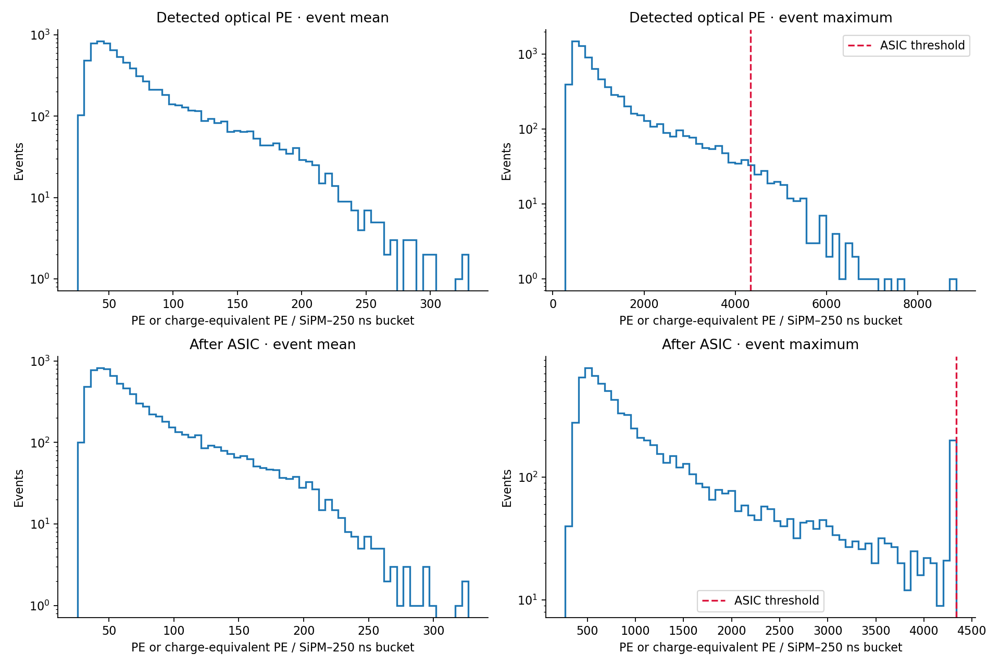
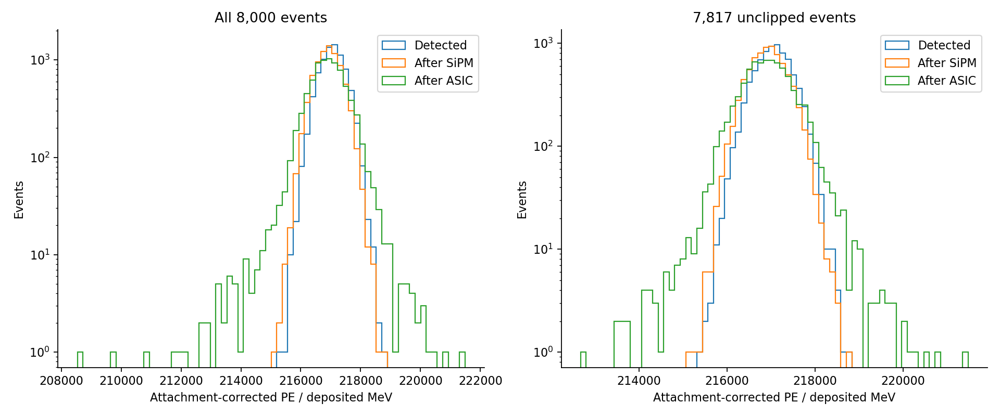
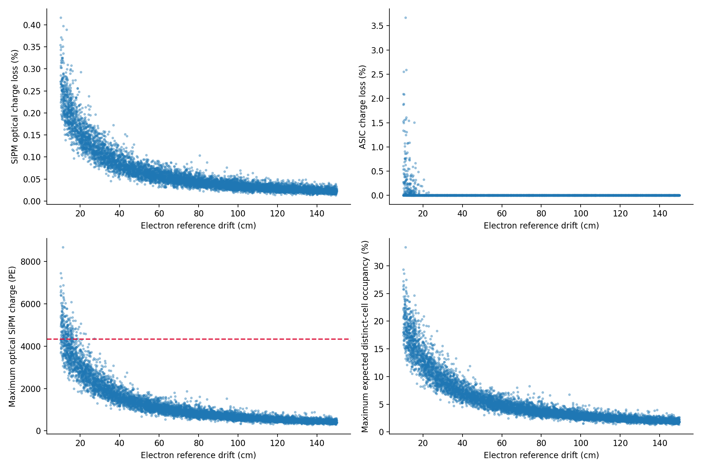

| Quantity | Value |
|---|---|
| Events | 8000 |
| Mean detected optical PE/event | 505,999.6 |
| SiPM optical charge loss (%) | 0.06681 |
| ASIC charge loss (%) | 0.00975 |
| Events with clipping (%) | 2.288 |
| Input pulses with clipping (%) | 0.00099 |
| Retained events | 7817 |
| Retained fraction (%) | 97.713 |
| Largest optical trigger count/bucket | 8,842 |
| Largest optical SiPM charge/bucket (PE) | 8,671.49 |
| Maximum expected distinct-cell occupancy (%) | 33.33 |
| Stage | All-event RMS (%) | Retained RMS (%) |
|---|---|---|
| Detected optical PE | 0.19530 | 0.19571 |
| After SiPM, optical charge | 0.20242 | 0.20111 |
| Noisy, before clipping | 0.29136 | 0.29171 |
| After ASIC | 0.31563 | 0.29171 |
| Stage | Event-mean average | Event-mean median | Event-max average | Event-max median |
|---|---|---|---|---|
| Detected optical PE | 74.959 | 59.201 | 1,252.237 | 831.000 |
| SiPM optical charge | 74.887 | 59.174 | 1,246.251 | 830.017 |
| After ASIC | 75.040 | 59.336 | 1,230.197 | 829.902 |
Full available bb0nu sample: 8,000 events, Xe–15% He only. E/P = 2 kV/cm/bar at 15 bar; 4 mm square-grid pitch, 2.5 mm hole and light-guide diameter, 5 mm EL depth, and 0.5 mm radial xenon gap. Electron reference distances are sampled uniformly over 10–150 cm with deterministic event seeds. Ion distances are complementary within 150 cm. Source hits and primary-pair realizations are replayed; event reference distance determines diffusion and attachment. No ion or pure-Xe response was generated.
Electron collection is unity. Uniform axial EL with absorbing walls gives analytical hole-exit acceptance. TPB conversion 0.65, forward fraction 0.5 and meridional guide capture 1−1/1.5 apply once; emitted-VUV to saved-blue probability is 0.01187461. Propagation and NOA 87 coupling are ideal. Saved blue photons are reused by the response stage.
S14160-3015PS: 3 × 3 mm², 39,984 physical cells, 21,808 uniformly illuminated cells under the centered 2.5 mm guide. Packaged PDE is 0.32 (peak-value approximation), gain 360,000 at +4 V and 25 C. Total primary dark rate is 700 kcps over the full device, split by cell count between illuminated and dark-only populations. Statistical recovery uses a provisional 12.5 ns exponential constant and 128 substeps per 250 ns bucket. Recurrent firing is allowed; PDE remains constant with recovery. Crosstalk, afterpulsing and gain spread are deferred.
Optical trigger counts are PDE successes. Charge-equivalent PE is charge divided by e × gain. Distinct optical occupancy is the conditional expected number of cells reached by triggers, divided by the illuminated count. Every event contributes one mean and maximum over its photon-positive input cells, with those same cells used at all stages. SiPM loss compares optical charge with trigger count; ASIC loss compares clipped charge with incoming sensor charge. Electronics adds 3.5417 PE RMS Gaussian noise and clips the bucket-average current at 1 mA (4334.38 PE). Signed outputs are retained.
Event sums use all acquired buckets on illuminated channels, including four quiet buckets at each end. Energy diagnostics correct known attachment survival and normalize by deposited MC energy. Optical and sensor widths use optical quantities; noisy totals subtract the expected dark baseline. Reported widths are full-distribution RMS/mean, including tails. The retained sample rejects an entire event if any acquired ASIC bucket clipped. Its width is conditional on that rejection and is reported with the retained fraction. No signal-amplitude cut or SiPM compression correction is applied.
Photon replay/archive: 70.16 s; four-worker response and assembly: 439.23 s; total timed production: 509.39 s. Independent workers own disjoint 100-event shards and preserve event/channel seeds. Numerical reduction streams quiet-noise moments and retains event summaries; complete bucket histories remain in the independently reusable photon, sensor and ASIC files.
Validation checks source/primary ledgers, selected gas identity, count and charge bounds, PDE sampling, quiet-noise statistics and numerical recovery diagnostics. The streaming multi-shard reduction was checked against the pilot with identical event-level charge and resolution results. Rare feasibility repairs affect the second recovery moment while preserving charge and the first moment; their next-single-trigger variance effect is bounded by the second-moment correction divided by cell count. Its square root is checked against 1% of the electronics noise RMS, and the repair frequency against one per million batches.



| Event ID | Drift (cm) | Max triggers | Max optical charge PE | SiPM loss (%) | ASIC loss (%) |
|---|---|---|---|---|---|
| 2004 | 11.17 | 8,842 | 8,671.5 | 0.3506 | 3.6657 |
| 642 | 11.50 | 7,003 | 6,888.8 | 0.3972 | 2.5923 |
| 393 | 10.30 | 6,731 | 6,639.6 | 0.3720 | 2.5523 |
| 5367 | 10.04 | 7,566 | 7,448.3 | 0.3434 | 2.0941 |
| 5929 | 10.46 | 7,349 | 7,228.4 | 0.3030 | 2.0826 |
| 878 | 10.02 | 6,936 | 6,832.6 | 0.3545 | 1.8753 |
| 2968 | 10.27 | 6,503 | 6,397.8 | 0.3197 | 1.8904 |
| 2932 | 10.13 | 6,653 | 6,556.2 | 0.4162 | 1.5264 |
| 3170 | 11.63 | 6,342 | 6,265.4 | 0.3133 | 1.6121 |
| 480 | 10.66 | 6,005 | 5,924.0 | 0.3254 | 1.5604 |
| 5257 | 11.39 | 6,603 | 6,505.4 | 0.2874 | 1.5685 |
| 294 | 10.34 | 6,122 | 6,041.9 | 0.3496 | 1.4989 |
| 4701 | 12.80 | 5,511 | 5,443.4 | 0.2923 | 1.5410 |
| 1689 | 15.54 | 6,169 | 6,087.8 | 0.3075 | 1.5039 |
| 5120 | 10.79 | 5,966 | 5,888.9 | 0.3210 | 1.3201 |
| Check | Value |
|---|---|
| Checked event ledgers | 8000 |
| PDE estimate | 0.3199989 |
| PDE z-score | -0.267 |
| Quiet noise RMS (PE) | 3.54172 |
| Quiet noise mean (PE) | 0.000135 |
| Second-moment state repairs | 183 |
| Maximum repair / smaller population (ppm) | 11.73861 |
| Largest next-trigger RMS impact bound (PE) | 0.003426 |
| Charge-variance limits | 0 |
PDF · Files and cards. Workflow: make elm-pitch4-production; presentation: make elm-pitch4-production-report.
schema = "nausicaa.electron_detector_spec.v1" pressure_bar = 15.0 helium_fraction = 0.15 drift_speed_mm_us = 1.0 lifetime_ms = 15.0 hole_pitch_mm = 4.0 hole_diameter_mm = 2.5 hole_depth_mm = 5.0 sipm_shape = "square" sipm_side_mm = 3.0 bucket_width_us = 0.25 reduced_field_kV_cm_bar = 2.0 j_variance_ratio = 0.030 j_status = "user_specified" j_reference = "Oliveira Figure 6; corrected approximate user reading, 2026-11-04" optical_model = "elm_blue_meridional" electron_collection_efficiency = 1.0 [optics] photon_band = "blue_tpb" tpb_conversion_efficiency = 0.65 forward_fraction = 0.5 guide_refractive_index = 1.5 gap_refractive_index = 1.0 guide_length_mm = 100.0 gas_gap_radial_mm = 0.5 propagation_transmission = 1.0 coupling_transmission = 1.0 electrode_transmission = 1.0 coupling_adhesive = "Norland NOA 87" guide_length_policy = "fixed_grading_field" grading_field_kV_cm = 4.65 cathode_potential_V = 1200.0 entry_potential_V = 31500.0 exit_potential_V = 46500.0 sensor_plane_potential_V = 0.0 reference = "docs/elm.tex; isotropic axial EL, absorbing walls, meridional isotropic-in-core capture" [pure_xe] d_T_mm_sqrtbar_per_sqrtcm = 3.5 d_L_mm_sqrtbar_per_sqrtcm = 0.9 yield_gain_photons_per_electron_kV = 137.0 yield_threshold_kV_cm_bar = 0.73 [xe_he15] d_T_mm_sqrtbar_per_sqrtcm = 1.6 d_L_mm_sqrtbar_per_sqrtcm = 0.75 yield_gain_photons_per_electron_kV = 139.0 yield_threshold_kV_cm_bar = 0.80 [placement] mode = "uniform_electron_reference" minimum_electron_drift_cm = 10.0 maximum_electron_drift_cm = 150.0 seed = 2026 reference = "Event reference drift; common diffusion and attachment distance for all hits, original hit coordinates retained" schema = "nausicaa.sipm_spec.v1" response_model = "statistical" statistical_substeps = 128 sparse_trigger_limit = 16 microcell_count = 39984 illuminated_microcell_count = 21808 microcell_pitch_m = 15e-6 recovery_s = 1.25e-08 arrival_model = "uniform_in_bucket" illumination = "uniform_disk_subset" recovery_pde = "constant" initial_state = "stationary_dark" charge_assignment = "avalanche_bucket" input_photon_band = "blue_tpb" shape = "square" side_m = 0.003 pde = 0.32 gain = 360000.0 dark_reference_rate_Hz = 700000.0 dark_reference_area_m2 = 9e-6 crosstalk = false afterpulsing = false gain_spread = false seed = 2026 [acquisition] channels = "illuminated_in_event" additional_channels = [] quiet_before_buckets = 4 quiet_after_buckets = 4 empty_first_bucket = 0 empty_last_bucket = 7 [provenance] device = "Hamamatsu S14160-3015PS, 3x3 mm2; nominal +4 V, 25 C" pde = "0.32 peak PDE at 460 nm used as provisional TPB-spectrum average; packaged PDE includes entrance window" gain = "3.6e5 nominal electrons per primary avalanche; charge per fully recovered avalanche" dark_rate = "S14160-3015PS nominal primary dark rate 700 kcps at 25 C and +4 V" window = "S14160-3015PS silicone resin, nominal n=1.57; unit external coupling used in pilot" datasheet = "papers/SiPM/Hamamatsu_S14160_small_cells.pdf" recovery = "Provisional 12p5 ns exponential recovery; sensitivity parameter, not a measured 3015PS recharge constant" illumination = "Uniform centered 2.5 mm disk on 3x3 mm square: round(39984*pi*1.25^2/9)=21808 lit cells; remaining 18176 dark-only; full 700 kcps dark rate split by cell count" baseline_pe = 0.0 bucket_width_s = 2.5e-7 current_limit_A = 0.001 lower_clipping = false noise = "independent_gaussian_pe" noise_rms_pe = 3.5416666666666665 schema = "nausicaa.sipm_electronics_spec.v1" seed = 2027 transfer = "bucket_average_current" [provenance] noise = "Same input charge RMS as 0.5 PE at gain 2.55e6; rescaled to gain 3.6e5" range = "User design input: upper clipping at 1 mA; supersedes the provisional 300 PE limit" timing = "User 0.25 us buckets; integrated charge divided by bucket duration"